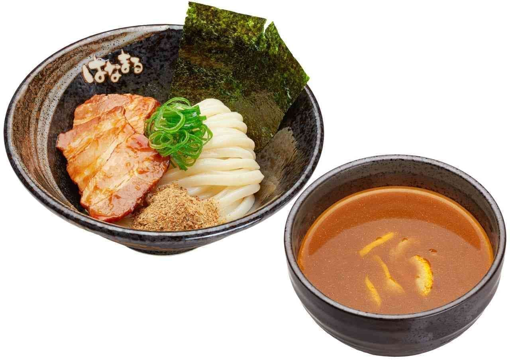
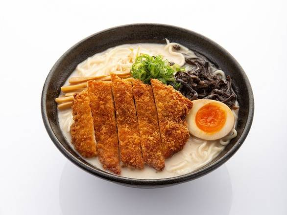
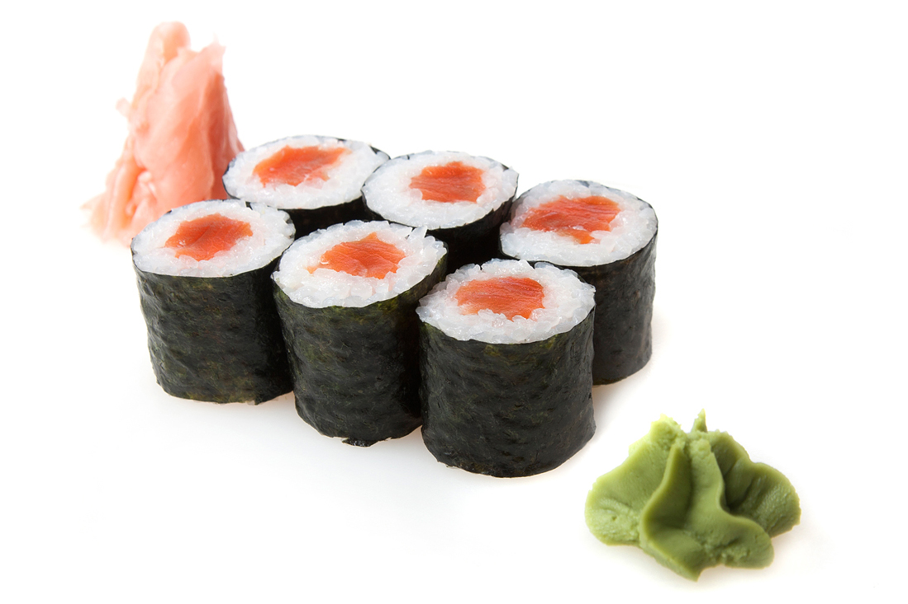
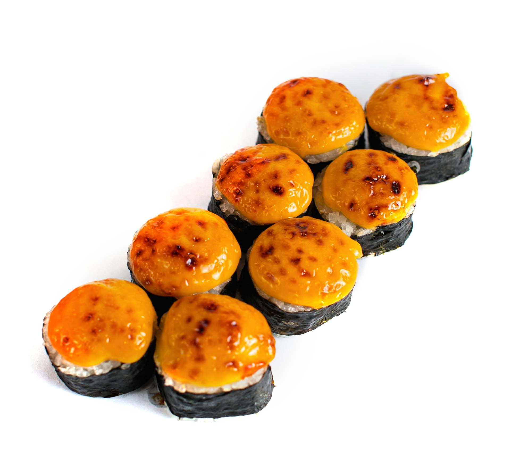
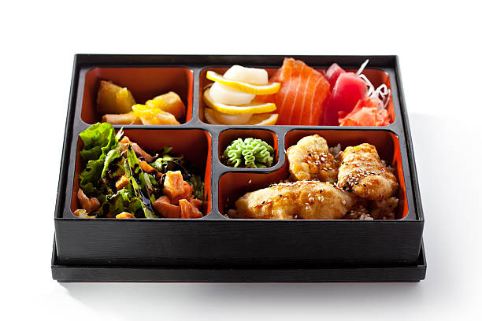

| Kode Makanan | Nama Makanan | Harga | Keterangan | Gambar |
|---|---|---|---|---|
| Beef Spicy Tsukemen | 55.000 | Ramen yang disajikan terpisah dari kuahnya memiliki rasa pedas dan diberi tambahan sapi sebagai topping. |
 | |
| Ramen Chicken Katsu | 40.000 | Ramen yang dihidangkan dengan toping lobak, telur dan chicken katsu di atasnya disajikan dengan kaldu |
 | |
| Salmon Maki Roll | 48.000 | Potongan salmon segar yang digulung bersama dengan nasi dan alga nori yang dipotong menjadi potongan kecil. |
 | |
| Tuna Baked Sushi Roll | 56.000 | sushi roll yang terbuat dari nasi dan potongan tuna yang telah dipanggang atau dibakar diberi lapisan bumbu spesial |
 | |
| Bento Chicken Katsu | 60.000 | Bento box disajikan dengan nasi, ayam katsu dan saos berbeque dengan tambahan salad, dan telur dadar. |  |